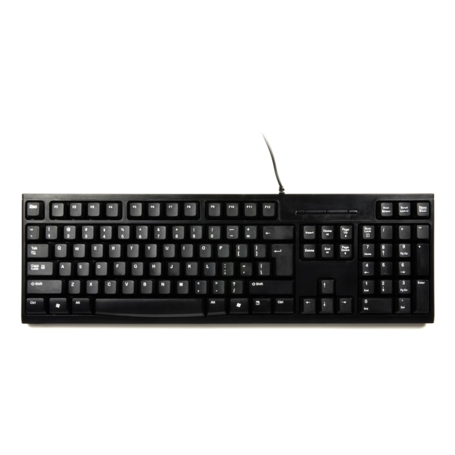
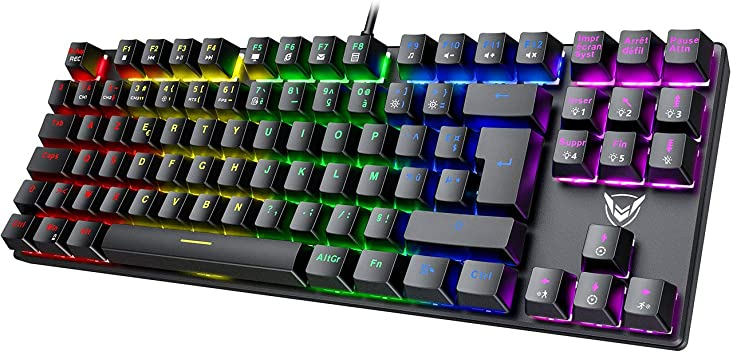

En parlant de claviers, il existe deux types de claviers avec differentes marques
Ici nous retrouvons un clavier de bureautique de la marque azerty
Pour ce clavier, c'est un clavier de bureau éssentiellement pour taper (écrire) du texte ou exécuter des actions basiques (ex: écrire des messages, jouer a des petits fps etc ...). Les touches ne sont pas très réactivent comparé au touches d'un clavier pour le gaming
Les claviers de bureautique ont des touches plates, une frappe douce et silencieuse et parfois quelques fonctions (rétroéclairage, sans-fil) et encore pleins d'autre choses

cliquez ici pour voir un clavier ou en cliquant sur l'image du clavier
Ici nous retrouvons un clavier mécanique de la marque azerty

cliquez ici pour voir un clavier gaming ou en cliquant sur l'image du clavier
Avec ce type de claviers on peut tout faire, c'est a dire que tu peux écrire donc taper du texte ou alors tu peux aussi jouer à des jeux vidéo !
Mais alors c'est quoi la difference entre un clavier de bureau et de gaming ?
Un clavier de bureau est déja beaucoup moins performant qu'un clavier gaming.
Le clavier gaming est dédié pour tout types d'utilsation sur un pc comme les jeux ou même du texte !